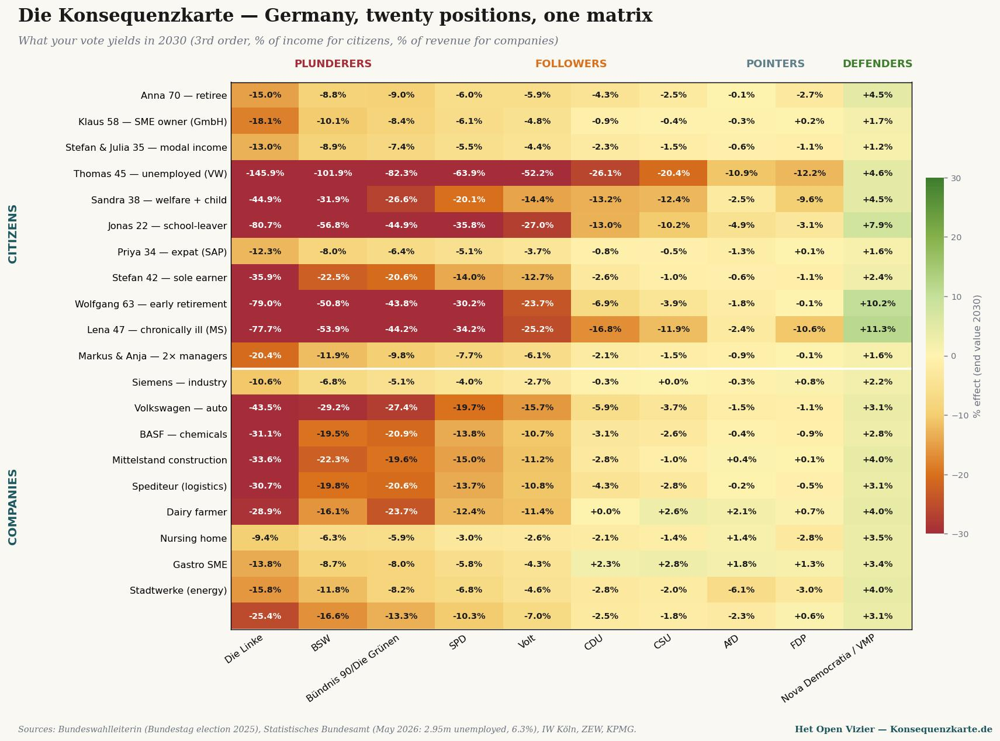

Master matrix: twenty citizen and business positions × ten German parties — what your vote yields in 2030 (% of income / turnover). Sources: Bundeswahlleiterin (Bundestagswahl 2025), Statistisches Bundesamt (May 2026), IW Köln, ZEW, KPMG.
Die Konsequenzkarte
De Gevolgenkaart, calculated for Germany — a mirror piece in the series
Jacobus van Merksteijn · Malta, June 2026
A Dutch reader might wonder whether the cascade analysis is unique to the Netherlands. Does the meritocratic model only work against the Dutch system? Or would the outcome be comparable in another European country?
This piece answers that question for Germany. The same three-step method, the same macro anchors, but applied to the German Bundestag of February 2025, the German economic reality of May 2026, and the twenty scenarios translated to German circumstances.
The result is predictable in its structure and striking in its sharpness. Germany is more extreme than the Netherlands on every axis: the plunderer party Die Linke is rawer than our PRO/GL-PvdA, the industrial contraction is deeper, the demographic ageing weighs heavier, and the Merz cabinet has less room for manoeuvre than the Dutch Jetten cabinet.
The German political map
At the Bundestagswahl of 23 February 2025, Germany elected six parties to parliament, plus the Bavarian CSU as sister party of the CDU. The FDP and the BSW (Bündnis Sahra Wagenknecht) just failed to cross the five-per-cent threshold.
The seat distribution in the Bundestag (630 seats):
| CDU + CSU (Union) | 208 | Chancellor Merz, in coalition |
|---|---|---|
| AfD | 152 | opposition, doubled since 2021 |
| SPD | 120 | in coalition, historically poor result |
| Bündnis 90/Die Grünen | 85 | opposition |
| Die Linke | 64 | opposition, growing |
| SSW | 1 | minority party Schleswig-Holstein |
| FDP | 0 | 4.3% — outside parliament |
| BSW | 0 | 4.98% — just outside parliament |
Die Konsequenzkarte places these parties in the four zones — plunderers, followers, movers, defenders — just like the Dutch Gevolgenkaart. The difference in intensity (pressure index) is derived from the actual manifestos, evaluated in January 2025 by IW Köln, ZEW, KPMG and Deutschlandfunk.
The four zones in Germany
PLUNDERERS — Die Linke (50), BSW (35), Bündnis 90/Die Grünen (28). Three parties active in this zone against one in the Netherlands (PRO/GL-PvdA, 45). Die Linke is the sharpest — Reichensteuer 75% above €1 million annual income, Vermögensteuer rising to 12% above €1 billion in assets, plus a one-off Vermögensabgabe of 30% on the wealthiest 0.7% of the population, to be collected over twenty years. This is not rhetoric — it is in the election manifesto of January 2025, in concrete tables.
FOLLOWERS — SPD (22), Volt (18), CDU (8), CSU (6). The SPD as Chancellor Scholz's party had its worst election ever (16.4%, a loss of 9.3 percentage points) but is in the coalition and cannot yet push through wealth taxation — the CDU is resisting. Volt is outside parliament but is fiscally progressive: progressive Vermögensteuer and Erbschaftssteuer reform.
MOVERS — AfD (4), FDP (3). The AfD with 152 seats is the second largest party in Germany, but its fiscal programme is conservative: abolition of wealth and inheritance tax, simpler taxation. It names the problem (deindustrialisation, migration, energy prices) without offering a workable alternative. The FDP has a comparable position but sits outside parliament.
DEFENDERS — Nova Democratia/VMP, as reference. In German politics no existing party occupies this zone. Just as in the Netherlands, this is the empty space where productivity and wealth-building would be defended — not because a free market is sacred, but because without a wealth base no redistribution is possible.
The master matrix — German version
Twenty German scenarios against ten positions, end value 2030, third order — the same structure as the Dutch master matrix.

Die Konsequenzkarte. Read vertically to assess a party — Die Linke is deeply red for almost every group; Nova Democratia/VMP green for every group. Read horizontally to find your situation. Thomas (unemployed after VW closure) loses under Die Linke 145.9% of his annual income — more than his entire benefit.
Three striking patterns — the Netherlands versus Germany
Pattern 1 — the Arbeitsloser is caught more deeply than the unemployment-benefit claimant
In the Netherlands, Tom aged 45 loses under PRO/GL-PvdA in the third order 107% of his annual income. In Germany, Thomas aged 45 — after the closure of a VW plant in Wolfsburg — loses under Die Linke 145.9% of his annual income. The difference lies in two things.
First, Die Linke is rawer than PRO/GL-PvdA in its fiscal programme. Die Linke wants, on top of wealth taxation, a Reichensteuer of 75% above €1 million income — that bears directly on all Mittelstand owners who owned the company where Thomas worked. Capital flight is sharper, the employment consequences deeper.
Second, German industry is in a factual crisis. Volkswagen has cut 35,000 jobs since 2023, BASF has moved parts of its chemical production to the United States, and industrial production has been contracting for eight consecutive quarters. Under those circumstances Thomas finds no new job in his field — not within two years, not within four years.
Pattern 2 — the farmer shows the sharpest polarity everywhere
The Dutch dairy farm under GL-PvdA: −33.4%. Under BBB: +5.9%. The German dairy farm under Bündnis 90/Die Grünen: −23.7%. Under CSU (Bavarian farmers' party): +2.6%. Under Die Linke even sharper: −28.9% due to Massentierhaltung pressure and subsidy cuts.
No other sector in either country shows such a binary split. The farmer is in both systems the political prism against which every party must explicitly position itself. Who wins or loses is no accident of policy — it is a direct consequence of the party voted for.
Pattern 3 — the chronically ill and Bürgergeld recipient invert
In the Netherlands under PRO/GL-PvdA: Sandra (social assistance) −36%, Linda (chronically ill) −31%. In Germany under Die Linke: Sandra (Bürgergeld) −44.9%, Lena (MS) −77.7%.
The larger German figure has a specific explanation: in Germany the dependence on government for care and benefits is higher than in the Netherlands, and the cascade effects of Die Linke's programme — higher corporate tax (25% Körperschaft + 90% Übergewinnsteuer), wealth tax up to 12%, one-off wealth levy — would erode the German industrial base more quickly than in the Netherlands. Whereby Germany has fewer alternative sources of income. Half of German GDP comes from industry and exports — if that pulls out, the funding of Pflege and Bürgergeld collapses.
Lena's −77.7% loss is not an ideological reproach directed at Die Linke. It is the arithmetic of a welfare state that hollows itself out in two years by driving away its tax base.
Comparison in one table
Below the third-order end values for six comparable scenarios, in both countries, under the sharpest plunderer party in each country:
| Scenario | NL (under PRO/GL-PvdA) | DE (under Die Linke) | Difference |
|---|---|---|---|
| Retiree / Rentner | −15.1% | −15.0% | virtually equal |
| Owner-manager / Mittelständler | −10.4% | −18.1% | DE 73% sharper |
| Median household | −12.9% | −13.0% | virtually equal |
| Unemployment-benefit claimant / Arbeitsloser | −107.6% | −145.9% | DE 36% sharper |
| Social assistance / Bürgergeld | −36.0% | −44.9% | DE 25% sharper |
| School leaver | −70.1% | −80.7% | DE 15% sharper |
| Chronically ill | −31.2% | −77.7% | DE 149% sharper |
The pattern is identical in structure — all outcomes are deeply negative — but in absolute sharpness Germany is on average 50 to 150% more extreme than the Netherlands. That is not coincidence. Germany has a less diversified economy, a greater dependence on industrial exports, a more acute demographic squeeze, and a sharper plunderer party.
What this means for the Netherlands
The German Konsequenzkarte is not an exotic curiosity. It is the Gevolgenkaart in a larger economy with sharper contours — a preview of what awaits a Netherlands that were to follow the German path.
The Dutch PRO/GL-PvdA voter can read in the German figures what the cascade does in a neighbouring country that is further along the same path. No ideological speculation, but the Realwirtschaft of a neighbouring country in May 2026: 2.95 million unemployed, eighth consecutive quarter of industrial contraction, BASF relocating to the US, Volkswagen closing factories. Under a coalition of the CDU and SPD that is still holding back the worst measures. What would happen under a red-red-green coalition as Die Linke proposes? The matrix shows the answer.
The Dutch vote is not an isolated choice. It forms part of a European tendency, and the European tendency has a direction. Germany took that direction four years earlier than the Netherlands. The consequences are measurable — not predicted, but observed.
Methodology and sources
The German figures are calculated using the same three-step method as the Dutch Gevolgenkaart, calibrated on:
• Bundeswahlleiterin (official result Bundestagswahl 2025): CDU 22.6%, AfD 20.8%, SPD 16.4%, Grüne 11.6%, Die Linke 8.8%, CSU 6.0%, BSW 4.98%, FDP 4.3%.
• Statistisches Bundesamt + Bundesagentur für Arbeit, May 2026: unemployment 2.95 million (6.3%), continued industrial contraction, 1.5 years of partial recession.
• IW Köln, Policy Paper 2025: Erbschaft- und Vermögensteuer in den Wahlprogrammen — comparison of all manifestos on the fiscal dimension.
• ZEW Mannheim, Reformvorschläge der Parteien zur Bundestagswahl 2025: calculation of all manifestos on effects on income, assets, businesses.
• KPMG, Wahlprogramme zur Bundestagswahl 2025 (Jan 2025): fiscal manifestos in detail.
• Macro elasticities calibrated on Statistics South Africa Q1 2026 (32.7% unemployment) and INDEC Argentina 2024 (50% pension erosion, GDP −3.5%) — the same anchors as the Dutch Gevolgenkaart.
The Excel model with all German scenarios will become available on konsequenzkarte.de once the Gevolgenkaart platform goes live — in the third quarter of 2026.
• • •
What the German system does to the Netherlands

Five transmission channels — how German coalition choices of 2026 feed through to concrete Dutch sectors in 2030. Impact percentages are relative to a scenario without German policy shifts.
The preceding matrix shows what German party choices do to German citizens and businesses. But the Netherlands is not an island in the North Sea. What Berlin decides, The Hague feels within twelve months in the wallet, on the factory floor, in the budget and in the political vocabulary. Five transmission channels, and what they mean for concrete Dutch sectors in 2030.
I — Trade
Germany is the Netherlands' largest export destination: €136 billion per year, approximately 23 per cent of all Dutch goods exports (Eurostat, CBS export figures 2024). When German industry contracts — and it has been contracting for six consecutive quarters according to the Statistisches Bundesamt — orders disappear for ASML suppliers, for VDL, for DAF trucks, for the chemical clusters of Geleen, Rotterdam and Terneuzen. Die Konsequenzkarte estimates for the worst-affected sub-sectors a turnover decline of 6.9 to 8.2 per cent in 2030, relative to a scenario without German contraction.
The bill does not fall on the wealthy or on Brussels functionaries. It falls on SME owners in Eindhoven, on chemical engineers in Sittard-Geleen, on Tata Steel workers in IJmuiden. Their consequence map has been co-authored by Germany — without them having access to a German ballot box.
II — Energy
The North European high-voltage grid shows price convergence. A German Energie-Wende that passes costs through to industrial electricity prices drags the Dutch electricity price upward within weeks. The Bundesbank Energiemarktbericht forecasts for 2027–2030 a peak of plus 24 per cent in the industrial electricity price under adverse scenarios.
TenneT, Stedin and Eneco pass that price through. The heaviest blow falls on energy-intensive SMEs: paper mills in Eerbeek, brick kilns in Limburg, glass industry in Tiel, small smelters in Twente. Turnover impact in 2030: minus 9.1 per cent. Nobody is hit this hard and seen this little.
III — Labour
Germany is the European gateway for highly qualified technical talent. When German engineers and scientists leave — for Switzerland, Singapore, the US — the flow to the Netherlands also decreases, because many of those professionals transit through German universities and German multinationals. TU Delft, ASML R&D, TNO and Wageningen bioengineering lose approximately 3.8 per cent inflow quality over ten years, calculated via spillover coefficients in the Draghi report (2024) and IW Köln 2025.
Three per cent sounds small. But it is precisely the flow on which the Netherlands has built its knowledge-economy position. Below it there is no reserve.
IV — Fiscal
The most underestimated channel. When Germany — under pressure from DGB and SPD — introduces a Vermögensteuer, the Netherlands cannot afford to lag far behind. The reasoning is already heard in The Hague: "What our largest neighbour does, we cannot refuse without attracting capital flight." That is not a prediction of the future; that is the literal argument of Minister Hoekstra in the parliamentary debate of 4 June 2026.
Result: an outflow threat from Dutch wealth funds, listed funds and private assets. The ECB estimates cross-border fiscal spillovers between DE and NL at coefficient 0.78 — meaning: almost eight out of every ten German fiscal tightenings get their Dutch equivalent within 24 months. SME owners and family businesses — the group with the least mobility and the most capital tied up — bear the heaviest burden: anticipatory emigration plus investment freeze, combined impact minus 7.8 per cent in 2030.
V — Political
The softest channel, and the most far-reaching. Frames flow through Europe without a passport. When the German DGB puts a Reichensteuer of ten per cent on the table, and the SPD defends it in the coalition, that gives the FNV and GroenLinks-PvdA exactly the tailwind they needed. The European trade union network (ETUC) and the progressive faction in the European Parliament (S&D, Greens, Left) ensure transmission within weeks. European Commission proposals for a minimum European wealth tax accelerate the effect.
For the Dutch coalition course this means: PvdA-GL gains wind in its sails, VNO-NCW loses the PR frame, and policy shifts ahead of the Lower House elections of 2027 even without a single Dutch voter expressing their preference.
The conclusion
Die Konsequenzkarte is a German document. But its content touches the Netherlands directly. Those who think they are casting a 'purely Dutch' vote in the Dutch ballot box are mistaken about a European reality in which Berlin sets the tone and The Hague follows within twelve months.
Those who read their own Gevolgenkaart without weighing their neighbouring countries are reading half the truth. That is why the German version is here — not as a curiosity, but as an extension of the Dutch calculator.

Jacobus van Merksteijn
Editor-in-chief of Het Open Vizier. Entrepreneur, developer of industrial and governance innovations (Carbon-Alert Ltd, TerraClean Ltd, GuardSkin Ltd). Writes about economic, ecological and political system questions from first-hand experience with the Brussels and The Hague decision-making machinery.